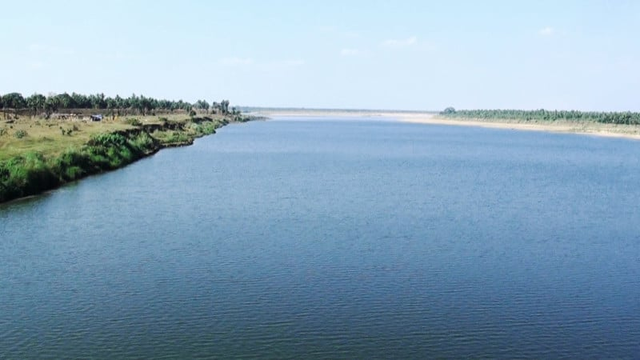
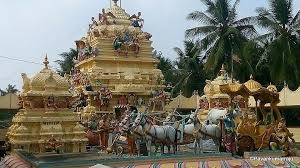
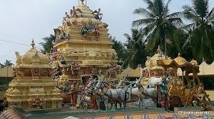
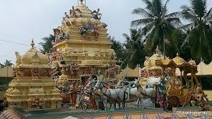
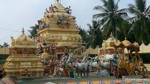
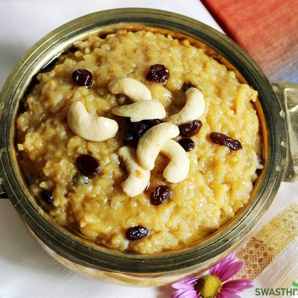
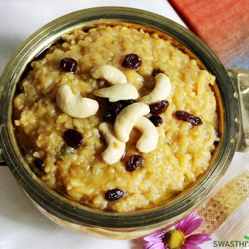

About Konaseema
Konaseema, located in Andhra Pradesh, is famous for its lush green coconut groves, backwaters, rivers, and traditional villages. It offers a serene environment for nature lovers, tourists, and photographers.

 


Konaseema, located in Andhra Pradesh, is famous for its lush green coconut groves, backwaters, rivers, and traditional villages. It offers a serene environment for nature lovers, tourists, and photographers.

Konaseema celebrates vibrant festivals like Sankranti, Vinayaka Chavithi, and local boat races. Enjoy folk dances, music, and traditional food that showcase the region’s rich culture.

Konaseema is known for its delicious local cuisine like spicy seafood, coconut rice, and traditional sweets. Food here reflects the culture and lifestyle of the region.
 
